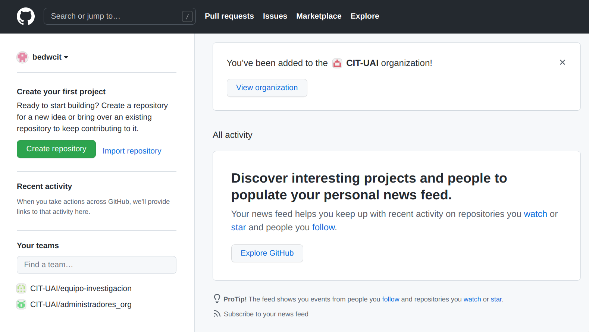

1.1 Configuración de repositorios

1.1.1 Crear repositorio
Podemos hacer repositorio de dos formas distintas.
Página web de GitHub
- Primero iniciamos sesión en GitHub 
- Hacemos click en
Create repository. Luego comoownerseleccionamos la organizaciónCIT-UAI Luego le damos a
Luego le damos aCreate repository - Ahora ya tenemos el repositorio creado en GitHub
 Ahora ya podemos hacer un Fork
Ahora ya podemos hacer un Fork
GitHub Desktop
Luego de iniciar sesión el la aplicación, en el menú ponemos
File > New repository...
Rellenamos la información del repositorio nuevo

Hacemos click en
Create repositorypara crear el repositorio de forma localLuego la aplicación nos muestra lo siguiente. Hacemos click en
Publish repositorypara subir el repositorio a GitHub
Nos aseguramos de seleccionar
CIT-UAIen el campoOrganization.
Hacemos click en
Publish repositorypara confirmar. Con esto subimos el repositorio que acabamos de crear localmente, al perfil (en GitHub) de la organizaciónCIT-UAILa aplicación ahora se ve como la imagen a continuación

Si en el menú nos vamos a
Repository > View on GitHub, veremos Ahora estamos listos para hacer un Fork
Ahora estamos listos para hacer un Fork
1.1.2 Crear un Fork
Nos vamos a la página de GitHub del repositorio al que queremos hacerle el
Fork. Hacemos click en el botón que diceForken la esquina superior derecha.
Seleccionamos nuestra cuenta de GitHub

Ahora, en la parte superior izquierda vemos que el repositorio ahora se encuentra en nuestro perfil, y que es un fork del repositorio del mismo nombre, pero del perfil
CIT-UAI Ya tenemos el Fork creado, y ya podemos clonarlo
### Clonar Fork {#clonar_fork}
Ya tenemos el Fork creado, y ya podemos clonarlo
### Clonar Fork {#clonar_fork}Con un Fork ya creado, en la aplicación GitHub Desktop, en el menú, nos iremos a
File > Clone repository...
En el menú que se nos abre, refrescamos la lista de repositorios

Vemos como aparece el repositorio al que le hicimos
Fork
Lo seleccionamos y le damos click a
Clone.️Es posible que de un problema con la carpeta de destino. Esto ocurrirá si anteriormente se creó el repositorio para el perfil de la organización (el repositorio del perfil UAI-CIT) desde el mismo computador que estás ocupando ahora.
Esto lo podemos solucionar de dos formas sencillas
Solución 1
-
La primera forma es corrigiendo el nombre de la carpeta de destino. Sugerimos añadir
_forkal nombre de la carpeta de destino.
Con esto la franja mostrando el error desaparece, y podemos hacer click en
Clonesin problemas, y podemos continuar.Observación
-
Luego de terminar de clonar el Fork en la lista de repositorios veremos los repositorios que se llaman igual, pero indicando a que perfil de GitHub es cada uno.
 Por otro lado en el visor de archivos veremos dos carpetas
Por otro lado en el visor de archivos veremos dos carpetas

Acá
repositorio1es la copia local del repositorio del perfil CIT-UAI, mientras querepositorio1_forkes la copia local del repositorio del perfil personal.
-
Luego de terminar de clonar el Fork en la lista de repositorios veremos los repositorios que se llaman igual, pero indicando a que perfil de GitHub es cada uno.
Solución 2 (recomendada)
-
La segunda solución es, antes de hacer el fork, eliminar la copia local del repositorio que creamos para la organización.
Para esto, en el menú, nos vamos a
View > Repository list. Hacemos click derecho en el repositorio que vamos a borrar. En este ejemplo el repositorio esrepositorio1y está bajo el nombre de la organizacióncit-uai
Hacemos click
Remove...
Marcamos la opción
Also move this repository to Recycle Biny confirmamos haciendo click en el botónRemoveEs importante precisar que esto NO borra el repositorio en GitHub, sino que solo borra la copia local de este.
Ahora podemos repetir los pasos anteriores (desde el 1 en adelante)
Observación
-
Luego de terminar de clonar el Fork, en la lista de repositorios veremos solo un repositorio (con el nombre del repositorio al que le hicimos el Fork) indicando pertenece a nuestro perfil personal de GitHub.

De forma similar, en el visor de archivos solo veremos una carpeta (con el nombre del repositorio al que le hicimos el Fork)

-
-
Nos aparecerá la siguiente ventana, donde podemos escoger entre dos opciones.

La opción
To contribute to the parent projectes ideal si el repositorio tiene (o tendrá) códigos que tú y tu equipo van a desarrollar.Ejemplo
Tu y tu equipo van a desarrollar distintos códigos para el cálculo de algún indicador. En este repositorio aún se están probando mejoras al cálculo, optimizaciones, o características.
Por otro lado, la opción
For my own purposeses ideal para solo usar el código (posiblemente desarrollado por otro equipo), al que le harás pocas modificaciones, solo para usarlo.Ejemplo
Tú y tu equipo solo quieren correr el cálculo de algún indicador, para alguna región en particular, por ejemplo, con la última version estable del código del cálculo (posiblemente desarrollada por otro equipo). En un principio, solo pretenden hacer pequeñas modificaciones en el código solo para usarlo, como por ejemplo ajustar las rutas de los insumos que van a utilizar.
Es importante mencionar que, sea cual sea la opción que escojamos, esta si se puede cambiar después, en la configuración del repositorio.Escogemos la opción más adecuada y hacemos click en
ContinueCon esto ya tenemos nuestro nuestro
Forkdel repositorio listo para usarlo.